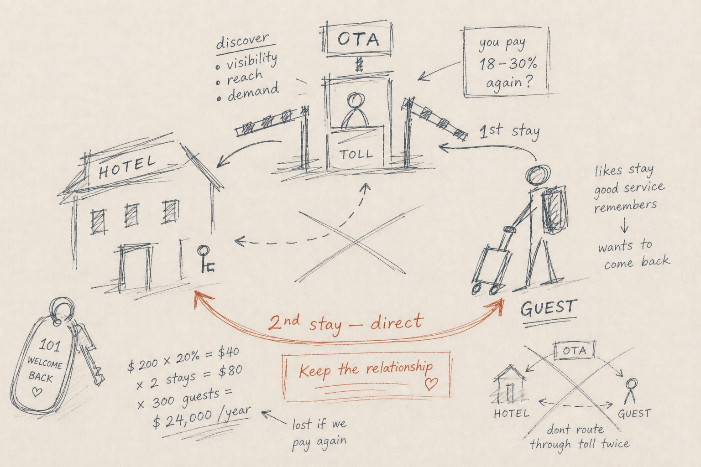

The print edition.
The PDF is the print edition of this same system, not a teaser. It carries the full evidence registry with every citation, the complete model and its assumptions, the full risk register and stop conditions, and the bounded first-test plan. Two boards below show the format at print ratio.
№006 is a Legacy Blueprint episode and a V1-derived design specimen, not V2 gated. No PDF is published for it. These boards show the print system, not a release.
V1-derived design specimen · not V2 gated
Direct booking recovery
Turn a discovered guest into a relationship the property can keep.

The decision at a glance
Twelve statements from the public layer, classed where the Canvas page assigns one.
An independent, owner-operated property that depends on OTA discovery.
ObservedThe property pays again to reacquire a guest it has already served.
Install and operate the direct-booking recovery stack: parity, booking path, missed-call recovery, re-book flows.
ModeledRepeat bookings that arrive direct, measured as direct share against a baseline.
ModeledFind, convert, remember, return, measure, with human approval at each judgment point.
Listings and profile; booking engine and phone; guest list and consent record; outreach tools; booking reports.
Drafting, organizing, and monitoring inside each capability.
What's true and current, consent and tone, offer choice, and reading the result.
One property: install the recovery stack, move its direct share.
A guest-relationship practice serving independent properties.
One property's direct share moved against its own baseline.
Activity rises while direct share doesn't move.
UnknownEvidence classes
01 / What the print edition carries
The same system, on paper.
The Canvas page holds every load-bearing source, assumption, risk, unknown, and disclosure. The print edition carries the full registries behind them, laid out for reading away from a screen.
Four registries, in full
- Evidence registry. Every claim with its class and its receipt: publisher, year, link.
- Complete model. The delivery loop, the capability map, and every assumption behind the arithmetic.
- Risk register. Stop conditions and the unknowns carried, each with how it resolves.
- First-test plan. The bounded engagement: baseline, repair, permission, measure.
What it never does
- Add a figure the page doesn't show.
- Blend scenarios or print a summary total.
- Upgrade a modeled figure with an adjective.
- Publish a specimen. №006 carries no Canvas lock and no PDF.
02 / Provenance
Three hashes, printed where you can check them.
A locked Canvas prints its source hash, its projection hash, and the PDF's own hash on the back cover with the edition date. The download card shows the same three, so the print and the page can be matched.
Canvas source hash, projection hash, PDF hash, edition date, and revision, in the data face.
None of the three exist. №006 has no Canvas lock, so no print edition is issued.
A changed Canvas field creates a new revision and a new print edition; old editions stay published and labeled. How versioning works